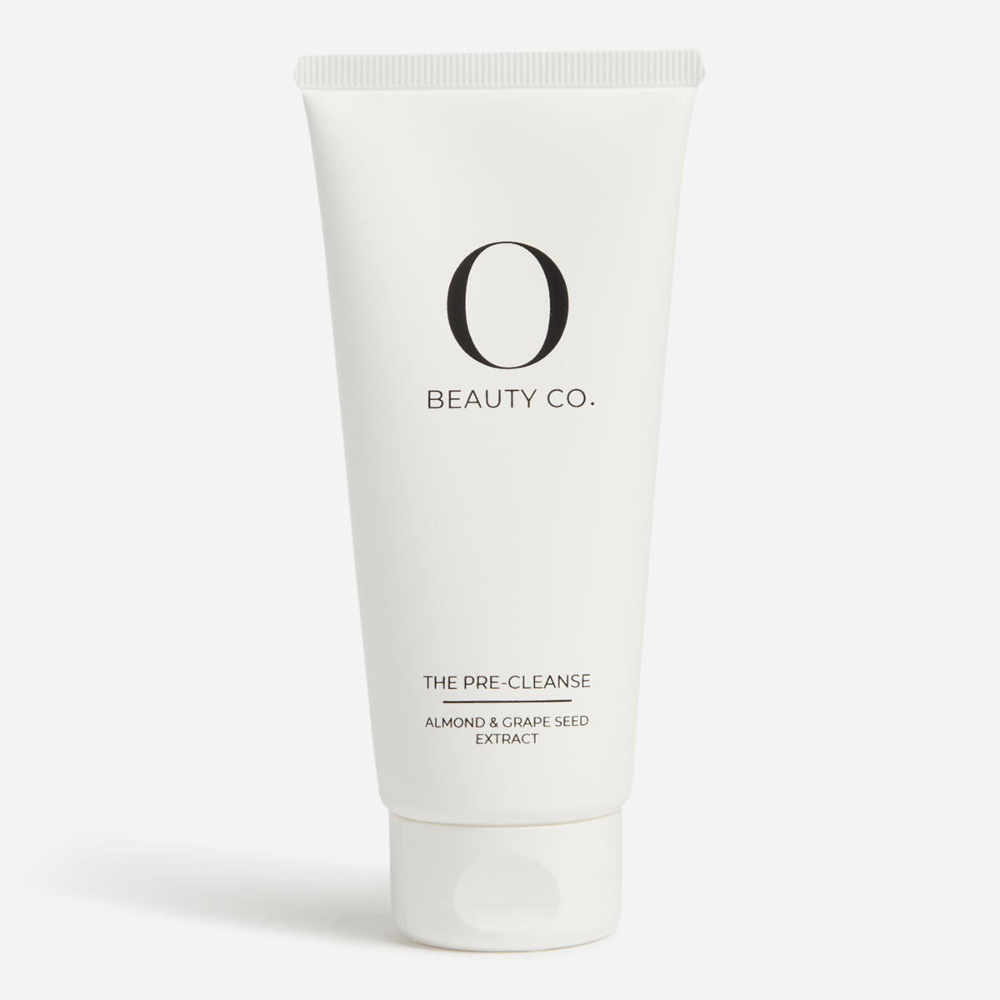
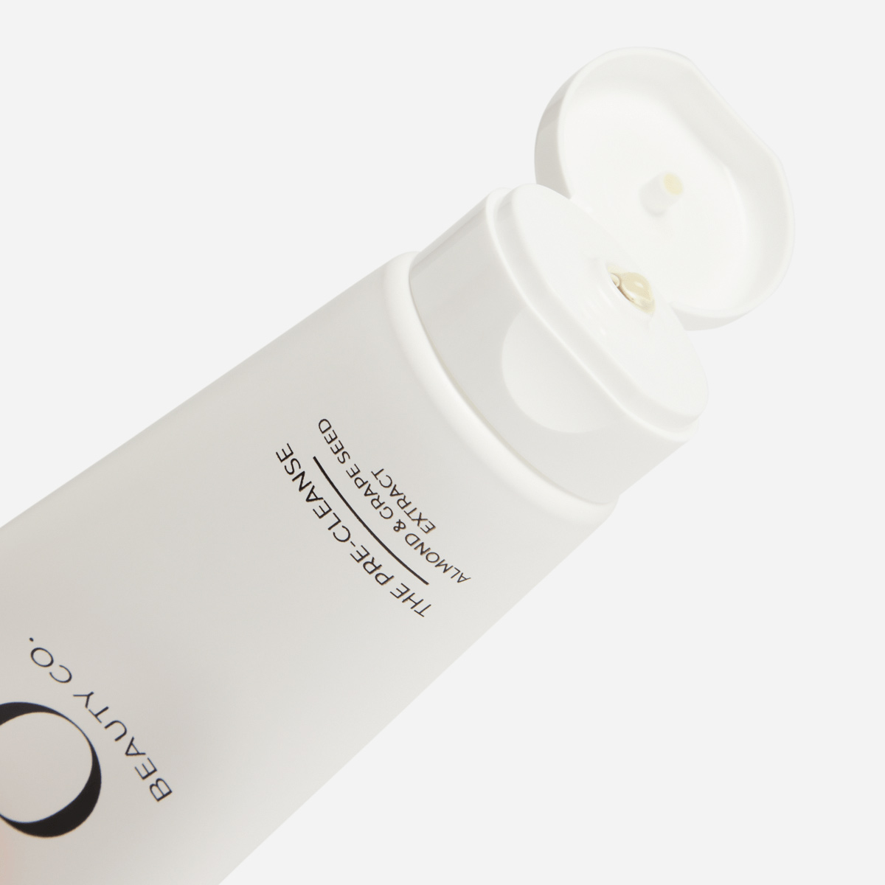
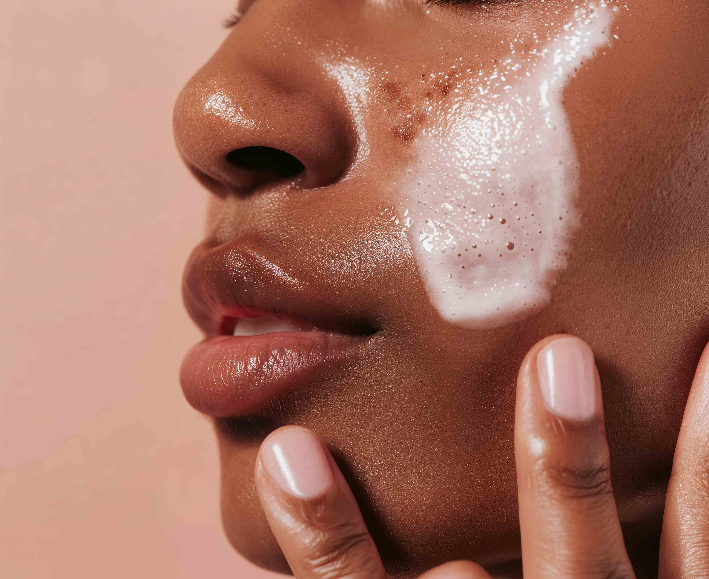
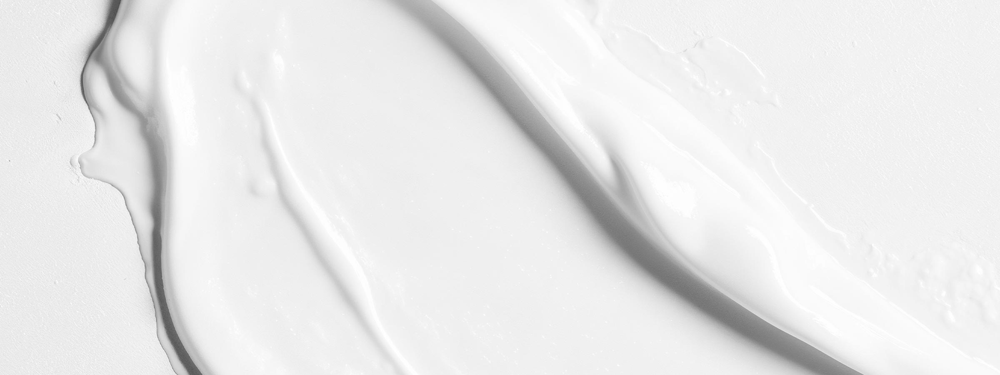
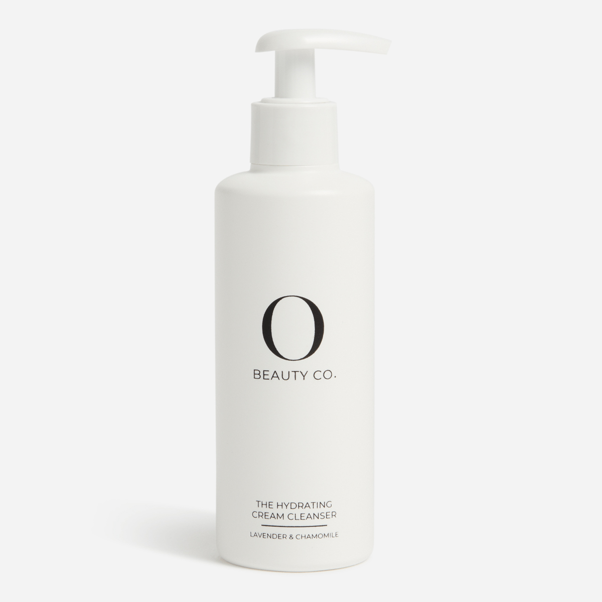
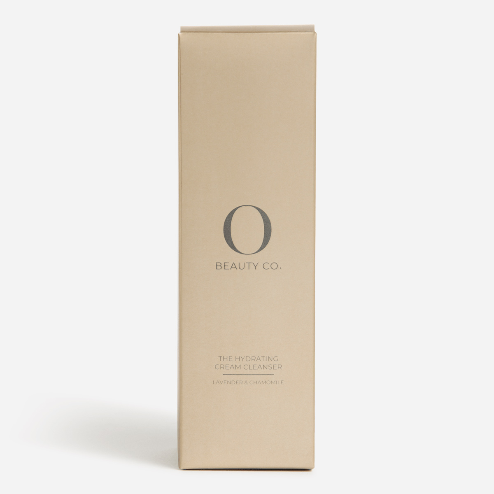
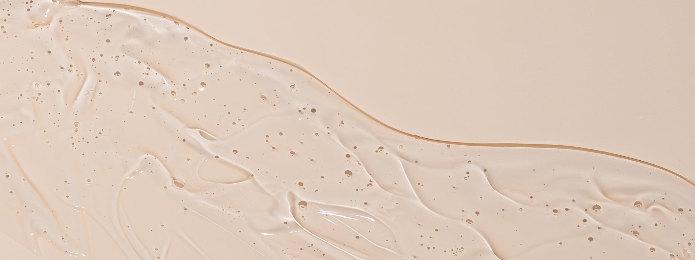
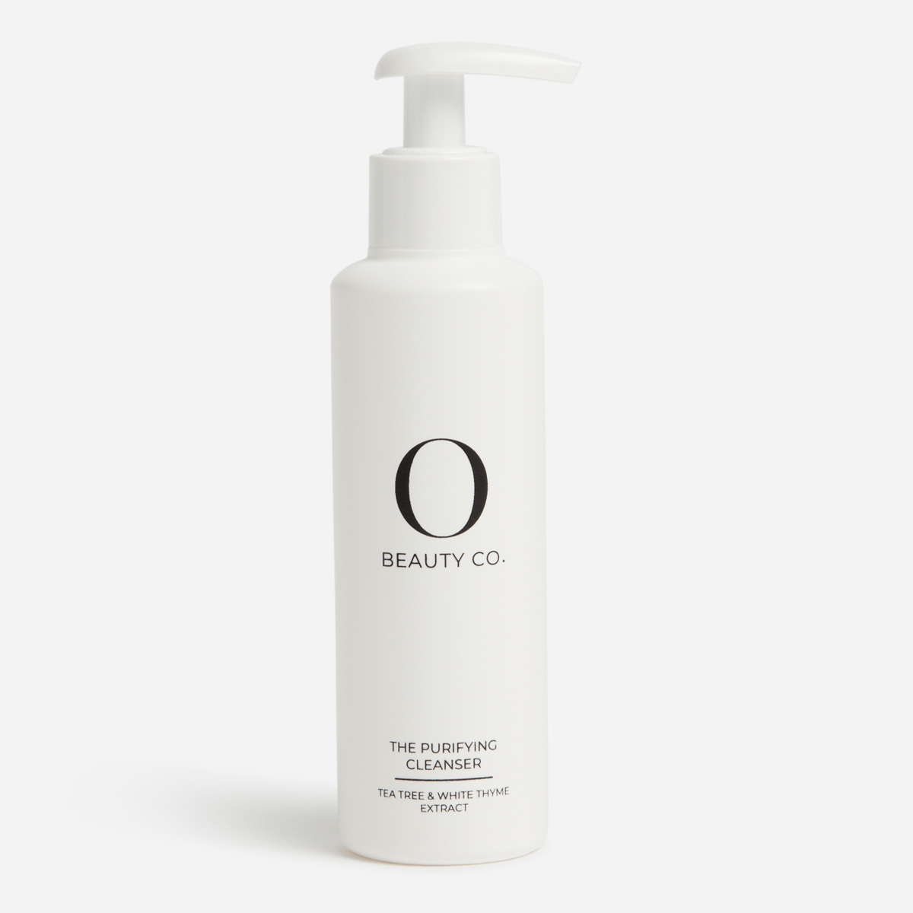
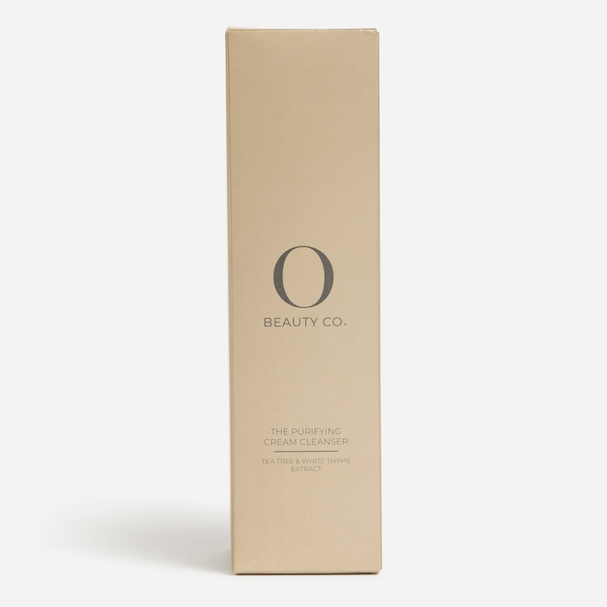

Lesson 1 - The pre-cleanse
OBC pre-cleanse
What it looks like:



Let’s talk skincare - Cleansers
Let’s talk skincare - Cleansers

![Beauty Co. logo](data:image/svg+xml;charset=utf-8,%0A%3Csvg%20xmlns%3D%22http%3A%2F%2Fwww.w3.org%2F2000%2Fsvg%22%20viewBox%3D%220%200%20152.747%20156.044%22%3E%0A%20%20%3Cg%3E%0A%20%20%20%20%3Cg%3E%0A%20%20%20%20%20%20%3Cpath%20d%3D%22M24.992%2C137.978c0%2C2.421-1.769%2C3.804-5.286%2C3.804h-6.472v-14.24h6.07c3.136%2C0%2C4.945%2C1.343%2C4.945%2C3.662%2C0%2C1.627-.864%2C2.706-2.151%2C3.234%2C1.809.407%2C2.894%2C1.607%2C2.894%2C3.54ZM14.72%2C128.783v5.167h4.482c2.251%2C0%2C3.558-.875%2C3.558-2.584s-1.307-2.584-3.558-2.584h-4.482ZM23.504%2C137.856c0-1.851-1.347-2.665-3.819-2.665h-4.965v5.35h4.965c2.472%2C0%2C3.819-.814%2C3.819-2.685Z%22%2F%3E%0A%20%20%20%20%20%20%3Cpath%20d%3D%22M39.247%2C140.48v1.302h-9.992v-14.24h9.689v1.302h-8.196v5.065h7.307v1.282h-7.307v5.289h8.498Z%22%2F%3E%0A%20%20%20%20%20%20%3Cpath%20d%3D%22M52.467%2C137.978h-7.99l-1.721%2C3.804h-1.577l6.556-14.24h1.496l6.556%2C14.24h-1.598l-1.721-3.804ZM51.914%2C136.757l-3.442-7.649-3.442%2C7.649h6.884Z%22%2F%3E%0A%20%20%20%20%20%20%3Cpath%20d%3D%22M58.502%2C135.63v-8.088h1.498v8.028c0%2C3.348%2C1.579%2C4.881%2C4.332%2C4.881%2C2.773%2C0%2C4.352-1.533%2C4.352-4.881v-8.028h1.458v8.088c0%2C4.054-2.186%2C6.152-5.81%2C6.152s-5.83-2.098-5.83-6.152Z%22%2F%3E%0A%20%20%20%20%20%20%3Cpath%20d%3D%22M78.252%2C128.844h-5.023v-1.302h11.557v1.302h-5.023v12.938h-1.511v-12.938Z%22%2F%3E%0A%20%20%20%20%20%20%3Cpath%20d%3D%22M92.75%2C136.859v4.923h-1.457v-4.923l-5.588-9.317h1.577l4.79%2C7.995%2C4.79-7.995h1.477l-5.588%2C9.317Z%22%2F%3E%0A%20%20%20%20%20%20%3Cpath%20d%3D%22M106.378%2C134.603c0-4.134%2C3.12-7.18%2C7.341-7.18%2C2.04%2C0%2C3.88.686%2C5.121%2C2.057l-.94.948c-1.14-1.17-2.54-1.674-4.14-1.674-3.38%2C0-5.921%2C2.501-5.921%2C5.849s2.54%2C5.849%2C5.921%2C5.849c1.6%2C0%2C3-.504%2C4.14-1.694l.94.948c-1.24%2C1.371-3.08%2C2.077-5.141%2C2.077-4.2%2C0-7.321-3.045-7.321-7.18Z%22%2F%3E%0A%20%20%20%20%20%20%3Cpath%20d%3D%22M121.653%2C134.603c0-4.082%2C3.145-7.124%2C7.418-7.124%2C4.233%2C0%2C7.398%2C3.022%2C7.398%2C7.124s-3.165%2C7.124-7.398%2C7.124c-4.273%2C0-7.418-3.042-7.418-7.124ZM134.978%2C134.603c0-3.342-2.52-5.804-5.906-5.804-3.407%2C0-5.947%2C2.461-5.947%2C5.804s2.54%2C5.804%2C5.947%2C5.804c3.386%2C0%2C5.906-2.461%2C5.906-5.804Z%22%2F%3E%0A%20%20%20%20%20%20%3Cpath%20d%3D%22M137.625%2C140.687c0-.616.477-1.073%2C1.053-1.073s1.073.457%2C1.073%2C1.073-.497%2C1.092-1.073%2C1.092-1.053-.477-1.053-1.092Z%22%2F%3E%0A%20%20%20%20%3C%2Fg%3E%0A%20%20%20%20%3Cpath%20d%3D%22M97.622%2C24.927c-6.633-7.834-15.492-11.269-25.452-10.521-29.598%2C2.225-32.603%2C40.259-28.842%2C62.609%2C3.609%2C18.2%2C14.904%2C35.698%2C35.919%2C34.276-15.234%2C1.412-30.684-5.384-40.224-17.564-7.126-9.097-10.342-19.746-10.333-31.223.011-14.508%2C5.676-28.578%2C16.859-37.938%2C12.827-10.736%2C30.255-13.188%2C45.994-7.76%2C13.513%2C4.661%2C24.062%2C15.191%2C28.71%2C28.952%2C4.761%2C14.095%2C3.143%2C30.366-4.175%2C43.38-7.519%2C13.372-21.615%2C21.687-36.88%2C22.178%2C14.489-1.326%2C22.962-10.378%2C27.239-23.833%2C5.57-19.498%2C4.89-46.371-8.815-62.559Z%22%2F%3E%0A%20%20%3C%2Fg%3E%0A%3C%2Fsvg%3E%0A)
Lesson 1 - The pre-cleanse
OBC pre-cleanse
What it looks like:


A gentle first cleanse that lifts away make-up, dirt and impurities, including eye make-up.
Prepares the skin for the rest of the skincare routine, helping other products work better while leaving the skin feeling clean, soft and comfortable.
Customers who:
How to sell
Start with the need
“Do you wear make-up every day or struggle to fully remove it without drying your skin?”
Position the product
Link to routine
Close the sale
“If you want your skincare to work better and your skin to feel clean but calm, this is the perfect first step.”
Test your knowledge
Learning Scenario: OBC Pre‑Cleanse
Set the scene
You’re working in a Beauty Box store when a customer approaches you.
You recommend the OBC Pre‑Cleanse and explain how it fits into a proper skincare routine. The customer asks a few questions before deciding.
Knowledge check
The customer asks: “Why do I need a pre‑cleanse?
Can’t I just use my normal cleanser?” What is the best response?
Choose an answer, then click Submit.

Lesson 2 - The hydrating cream cleanser
OBC hydrating cream cleanser
What it looks like:


A gentle cream cleanser that cleanses the skin while helping to soothe and refresh.
Its creamy, velvety texture leaves skin feeling nourished, soft and balanced while helping to calm irritation and redness.
This cleanser is ideal for customers who:
How to sell
Start with the concern
“Does your skin ever feel dry or tight after you cleanse?”
Position the benefit
Link to routine
Close the sale
“If you want your skin to feel clean, soft and calm after cleansing, this is a great everyday option.”
Test your knowledge
Learning Scenario: OBC Hydrating Cream Cleanser
Set the scene
You’re assisting a customer in store who says:
You introduce the OBC Hydrating Cream Cleanser and explain how it works and who it’s best suited for. The customer asks a few questions before deciding.
Knowledge check
Decision Question 1: The customer asks:
“What makes this cleanser different from other cleansers?” What is the best response?
Choose an answer, then click Submit.

Lesson 3 - Purifying cleanser
OBC purifying cleanser
What it looks like:


A gentle purifying cleanser that uses plant-powered ingredients to cleanse the skin.
Helps purify and soothe the skin while removing excess oil and impurities, without being harsh or stripping.
This cleanser is ideal for customers who:
How to sell
Start with the concern
“Do you struggle with excess oil, breakouts, or skin that feels congested?”
Position the benefit
Link to routine
Close the sale
“If you want your skin to feel clean, fresh and balanced without irritation, this is a great everyday option.”
Test your knowledge
Learning Scenario: OBC Purifying Cleanser
Set the scene
You’re assisting a customer in store who says:
You recommend the OBC Purifying Cleanser and explain how it helps cleanse and balance the skin. The customer asks a few questions before deciding.
Knowledge check
Decision Question 1: The customer asks:
“What does this cleanser actually do for my skin?” What is the best response?
Choose an answer, then click Submit.
![](data:image/svg+xml,%3csvg%20id='light'%20enable-background='new%200%200%2024%2024'%20height='512'%20viewBox='0%200%2024%2024'%20width='512'%20xmlns='http://www.w3.org/2000/svg'%3e%3cg%3e%3cpath%20d='m13.5%2024h-3c-.7%200-1.5-.6-1.5-1.8v-2.1c0-1-.5-1.9-1.3-2.6-1.8-1.4-2.7-3.4-2.7-5.6.1-3.8%203.2-6.8%206.9-6.9%201.9%200%203.7.7%205%202s2.1%203.1%202.1%205c0%202.1-.9%204.1-2.6%205.4-.9.7-1.4%201.8-1.4%202.8v2.3c0%20.8-.7%201.5-1.5%201.5zm-1.5-18c-3.2%200-5.9%202.7-6%205.9%200%201.9.8%203.7%202.3%204.8%201.1.9%201.7%202.1%201.7%203.4v2.1c0%20.2%200%20.8.5.8h3c.3%200%20.5-.2.5-.5v-2.3c0-1.3.7-2.7%201.8-3.6%201.4-1.1%202.2-2.8%202.2-4.6%200-1.6-.6-3.1-1.8-4.3-1.1-1.1-2.6-1.7-4.2-1.7z'/%3e%3c/g%3e%3cg%3e%3cpath%20d='m14.5%2021h-5c-.3%200-.5-.2-.5-.5s.2-.5.5-.5h5c.3%200%20.5.2.5.5s-.2.5-.5.5z'/%3e%3c/g%3e%3cg%3e%3cpath%20d='m12%203c-.3%200-.5-.2-.5-.5v-2c0-.3.2-.5.5-.5s.5.2.5.5v2c0%20.3-.2.5-.5.5z'/%3e%3c/g%3e%3cg%3e%3cpath%20d='m18.7%205.8c-.1%200-.3%200-.4-.1-.2-.2-.2-.5%200-.7l1.4-1.4c.2-.2.5-.2.7%200s.2.5%200%20.7l-1.4%201.4s-.2.1-.3.1z'/%3e%3c/g%3e%3cg%3e%3cpath%20d='m23.5%2012.5h-2c-.3%200-.5-.2-.5-.5s.2-.5.5-.5h2c.3%200%20.5.2.5.5s-.2.5-.5.5z'/%3e%3c/g%3e%3cg%3e%3cpath%20d='m20.1%2020.6c-.1%200-.3%200-.4-.1l-1.4-1.4c-.2-.2-.2-.5%200-.7s.5-.2.7%200l1.4%201.4c.2.2.2.5%200%20.7%200%20.1-.1.1-.3.1z'/%3e%3c/g%3e%3cg%3e%3cpath%20d='m3.9%2020.6c-.1%200-.3%200-.4-.1-.2-.2-.2-.5%200-.7l1.4-1.4c.2-.2.5-.2.7%200s.2.5%200%20.7l-1.4%201.4c-.1.1-.2.1-.3.1z'/%3e%3c/g%3e%3cg%3e%3cpath%20d='m2.5%2012.5h-2c-.3%200-.5-.2-.5-.5s.2-.5.5-.5h2c.3%200%20.5.2.5.5s-.2.5-.5.5z'/%3e%3c/g%3e%3cg%3e%3cpath%20d='m5.3%205.8c-.1%200-.3%200-.4-.1l-1.4-1.5c-.2-.2-.2-.5%200-.7s.5-.2.7%200l1.4%201.4c.2.2.2.5%200%20.7-.1.1-.2.2-.3.2z'/%3e%3c/g%3e%3cg%3e%3cpath%20d='m16%2012.5c-.3%200-.5-.2-.5-.5%200-1.9-1.6-3.5-3.5-3.5-.3%200-.5-.2-.5-.5s.2-.5.5-.5c2.5%200%204.5%202%204.5%204.5%200%20.3-.2.5-.5.5z'/%3e%3c/g%3e%3c/svg%3e)